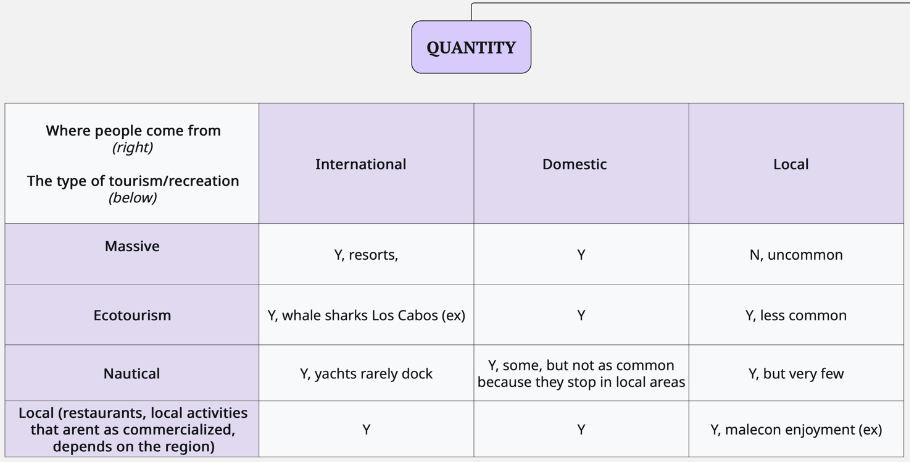

Tourism and Recreation
This goal captures the quantity and quality of experiences that people have when visiting coastal and marine areas.
CORE DEFINITION
- Focus: Value that people derive from experiencing and enjoying coastal areas
- Not about: Revenue or livelihoods generated by tourism (covered under Livelihoods and Economies)
- Emphasis: Personal and cultural value of coastal recreation experiences
Key Questions
What is the ideal sustainable state of the tourism and recreation goal?
- How (ideally) do we measure the quantity and quality of people’s experience from visiting coastal areas? Should certain experiences be prioritized?
- How do we define the reference point?
- How do we incorporate sustainability into the assessment?
Goalkeeper Meetings
Meeting Access
Zoom Link: https://us06web.zoom.us/j/3255055973
Key Team Members
- Ana Luisa Figueroa
- Andrés Cisneros Montemayor
- Carmina Valiente
- Juan Carlos Villaseñor-Derbez
Meeting Schedule (Monday 9:00 AM - 10:00 AM PDT)
| Meeting | Date | Focus |
|---|---|---|
| 1 | July 21, 2025 | Group introductions, OHI platform overview, goal calculations, define goal |
| 2 | August 18, 2025 | Finish defining the goal, discuss the ideal way to measure this goal, and the ideal state of it |
| 3 | September 22, 2025 | Review how to measure the goal, and begin defining open-source data sources available |
| 4 | October 20, 2025 | Preliminary results and possibly pressure/resilience discussions |
| 5 | November 17, 2025 | Final analysis plan review |
| 6 | December 15, 2025 (tentative) | Tentative |
Google Calendar
Add the shared calendar to your Google Calendar account using the provided link. It will appear under “Other calendars” and provide access to all scheduled meetings with updated Zoom links.
Please let us know if you have any questions. We look forward to working on this initiative with you!
- Meeting #1 Slides to revisit the main ideas.
- Meeting #2 Slides, on defining the TR goal.
- TR Goalkeeper Ideas, where you can add your thoughts, ideas, and potential data sources to the ongoing collaborative document.
Meeting Summaries
Thank you to everyone who joined our first Tourism & Recreation (TR) Goalkeeper meeting!
It was a great start to our work together in defining what sustainable tourism and recreation means for the Gulf of California.
During our discussion, we identified three main types of tourism in the region:
- Massive Tourism – Often centered around “sun and beach” resorts, leisure activities, and nightlife.
- Ecotourism – Structured under formal government categories, this includes nature and conservation-focused tourism.
- Local Tourism & Recreation – Activities led by or for the local community and residents.
We also highlighted Nautical Tourism — water-based experiences like sailing and marine tours, often taking place entirely at sea. This type could either be its own category or be considered a subset of the three main types above. This remains an open question we’re still exploring.
In addition, we discussed tourism origins:
- International
- Domestic
- Local
And brainstormed potential measures for:
- Quantity: such as number of hotels, flights, sailboats, and visits
- Quality: such as user sentiment from TripAdvisor reviews or surveys (e.g., QR surveys at beach entrances — although these are beyond our current project scope).
üå± What Does ‚ÄúSustainability‚Äù Mean for TR?
We agreed that sustainability in tourism should reflect:
- Positive social impact – like preserving local culture and community benefits
- Positive environmental impact – including proper management of protected areas and potential use of mechanisms like conservation bracelets or differentiated tariffs for locals vs. nationals
- Review the TR introduction slides to revisit the main ideas.
- Review the Key Questions in the “About the TR Goal” tab, and keep brainstorming.
- Add your thoughts, ideas, and potential data sources to the ongoing collaborative document.
In our next meeting, we’ll continue discussing how to evaluate:
- Quantity
- Quality
- Sustainability of tourism and recreation in the Gulf of California.
We’ll also start to define the reference point for this goal — our vision of what ideal, sustainable tourism and recreation looks like. In assessment terms, this is the “100” score — our A+ target!
Below are some key themes and insights from this month’s Tourism & Recreation discussion. Even though participation was limited, the conversation provided valuable context, examples, and new ideas for refining our goals and indicators.
What makes “healthy” tourism?
We explored whether growth in international visitors is automatically beneficial for local communities. While tourism brings jobs, there are trade-offs in terms of real estate pressures and lifestyle changes. The group emphasized that growth is positive only if:- local communities benefit,
- ecosystems remain healthy, and
- use stays within the region’s carrying capacity (TCC).
- local communities benefit,
Real estate and access
Tourism-related real estate development strongly affects both community well being and coastal access. In the Gulf of California, beach access is often restricted by resorts or private properties, despite Mexican law requiring public access points. Tracking property patterns and access roads may help us create stronger indicators.Types of tourism
We distinguished between different tourism forms:- International & domestic: Resorts, nautical tourism (boating/yachting), and most ecotourism.
- Local: More tied to everyday activities (restaurants, malecón visits).
Nautical tourism in particular is likely limited to wealthier visitors, given costs and leisure constraints.
See draft tourism types matrix below:
- International & domestic: Resorts, nautical tourism (boating/yachting), and most ecotourism.
Socioeconomic impacts
High quality jobs in tourism (ex: guides, operators, business owners) often go to outsiders rather than local residents. While progress is being made, with more young locals entering the sector, it remains a key area to monitor to ensure benefits are equitably shared.Carrying Capacity & Sustainability
Resource use, particularly water and energy, highlights the inequities between resorts and local households. Assessing sustainability will require balancing visitor numbers with fair allocation of essential resources.Indicator framework possibility:
The group suggested structuring indicators into three subcomponents:- Quantity (number of visitors, tourism types)
- Quality (job opportunities, local benefits)
- Sustainability (resource use, ecological impacts, cultural impacts)
- Quantity (number of visitors, tourism types)
We also noted that some certifications (like Blue Flag beaches) may apply primarily to high traffic tourism areas, which could affect how sustainability indicators are framed.
Next Steps
We will be discussing the indicator framework (Quantity, Quality, Sustainability), as well as ideal indicators to reflect the intent of this goal. Please come prepared to discuss indicators for each type of tourism’s quantity, quality, and sustainability.
Thank you, and stay tuned for a meeting agenda for Meeting #3!
Stay tuned for Meeting #3 resources.
Additional Insights & Examples
These are some of the points discussed by the Expert Working Group.
Tourism Types Mentioned:
- Massive Tourism:
Large-scale government-promoted developments
- Community Tourism:
Includes efforts like:- Resilience MPAs with island communities
- CONAP collaboration
- Guaymas community-led initiatives
- Resilience MPAs with island communities
- Ecotourism:
Even NGO-led efforts can cause unintended harm
Key Issues Identified:
- Government Promotion: Strong push for large-scale tourism throughout the Gulf
- Environmental Regulation: Weak regulation, especially around beach development
- Community Impact:
- Need to balance economic benefits (e.g., jobs) with environmental and social costs
- Highlight alternatives to mass tourism
- Need to balance economic benefits (e.g., jobs) with environmental and social costs
Additional Considerations:
- Job Creation vs. Social Costs
- Local vs. External Benefits
- Cultural Impact
- Organized Crime
- Social Stability (e.g., drug-related problems, institutional breakdown)
| Reference Point Type | Example |
|---|---|
| Government-defined objectives | Increase tourism by 20% by 2050 |
| Local preferences + | Desire for quiet vs. busy beaches |
| Carrying capacity | Maximize tourism relative to carrying capacity |
| Stable tourism levels | No net losses or gains in tourism over time |
| Tourist density comparisons | Compare tourists/km² with other regions |
+ Often a policy tension: governments promote tourism for jobs, while communities experience social and environmental impacts